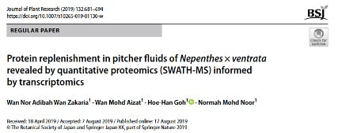

Recent studies have applied proteomics approaches to identify proteins in the pitcher fluids for better understanding the carnivory mechanism, but protein identification is hindered by limited species-specific transcriptomes for Nepenthes.

In this study, the proteomics informed by transcriptomics (PIT) approach was utilized to identify and compare proteins in the pitcher fluids of Nepenthes ampullaria, N. rafflesiana, and their hybrid N. × hookeriana through PacBio isoform sequencing (Iso-Seq) and liquid chromatography-mass spectrometry (LC-MS) proteomic profiling.
Comparative AnalysisThe comparative analysis found that transcripts and proteins identified in the hybrid N. × hookeriana were more resembling N. rafflesiana, both of which are insectivorous compared with omnivorous N. ampullaria that can derive nutrients from leaf litters.
The comparison of protein content in pitcher fluids of three Nepenthes species through transcriptomic and proteomic analyses revealed distinct profiles of secreted proteins, especially hydrolytic enzymes and defense-related proteins. |

|

Pitcher Fluid Protein ProfilingPreviously reported hydrolytic proteins were detected, including proteases, glucanases, chitinases, phosphatases, nucleases, peroxidases, lipid transfer protein, thaumatin-like protein, pathogenesis-related protein, and disease resistance proteins. Many new proteins with diverse predicted functions were also identified, such as amylase, invertase, catalase, kinases, ligases, synthases, esterases, transferases, transporters, and transcription factors
|

|

Despite no evidence of novel enzymes for leaf litter digestion in N. ampullaria, this study provides information on the molecular compositions of individual Nepenthes species with differential secretion of endogenous proteins apart from the distinct morphological traits between the parent species and hybrid that reflect inter-species diversity.
Significance
A more complete picture of digestive fluid protein composition in this study provides important insights on the molecular physiology of pitchers and carnivory mechanism of Nepenthes species with distinct dietary habits. Furthermore, many interesting biological questions that are raised on the functions of new proteins discovered in this study manifest wonders on the molecular physiology of secreted proteins in the pitcher fluids to be elucidated in future studies.

We performed RNA-seq analysis on the pitcher tissues and liquid chromatography-tandem mass spectrometry (LC–MS/MS) analysis on the pitcher fluids of Nepenthes × ventrata to study protein expression in this carnivory organ during early days of pitcher opening. This transcriptome provides a sequence database for pitcher fluid protein identification.

|
A total of 32 proteins of diverse functions were successfully identified in which 19 proteins can be quantified based on label-free quantitative proteomics (SWATH-MS) analysis while 16 proteins were not reported previously. Our findings show that certain proteins in the pitcher fluid were continuously secreted or replenished after pitcher opening, even without any prey or chitin induction.
|
{kind=link}
|
We also discovered a new aspartic proteinase, Nep6 (MG700593), secreted into N. × ventrata pitcher fluids.
|

|
This is the first SWATH-MS analysis of protein expression in Nepenthes pitcher fluid using a species-specific reference transcriptome. Taken together, our study using a gel-free shotgun proteomics informed by transcriptomics (PIT) approach showed the dynamics of endogenous protein secretion in the digestive organ of Nepenthes × ventrata and provides insights on protein regulation during early pitcher opening prior to prey capture.
Significance
The discovery of 16 previously unreported proteins related to gene and protein regulations in the pitcher fluid provides unprecedented insights into the molecular regulation of proteins in Nepenthes pitcher fluids with possible involvement of ABA signaling. Furthermore, this study demonstrates that endogenous proteins involved in plant defense mechanism were highly replenished during early pitcher opening, which supports the origin of plant carnivory from plant defenses. Nepenthes pitchers could serve as a unique model system for the cost–benefit investigation of plant protein turnover and replenishment in future studies.
References
Books
Wan Zakaria W.N.A., Cho W.T., & Goh H-H. (2020) Merungkai komposisi protein cecair kendi periuk kera Nepenthes. UKM Press ISBN 9789672510338
Grants
- Ravee R, Baharin A, Cho W-T, Ting T-Y & Goh H-H* (2021) Protease activity is maintained in Nepenthes ampullaria digestive fluids depleted of endogenous proteins with compositional changes. Physiologia Plantarum doi: 10.1111/ppl.13540
- Zulkapli MM, Ab Ghani NS, Ting TY, Aizat WM & Goh H-H* (2021) Transcriptomic and Proteomic Analyses of Nepenthes ampullaria and Nepenthes rafflesiana Reveal Parental Molecular Expression in the Pitchers of Their Hybrid, Nepenthes × hookeriana. Front. Plant Sci. 11:625507. doi: 10.3389/fpls.2020.625507
- Wan Zakaria WNA., Aizat WM, Goh H-H* & Mohd Noor N (2019) Protein replenishment in pitcher fluids of Nepenthes × ventrata revealed by quantitative proteomics (SWATH-MS) informed by transcriptomics. Journal of Plant Research 132 (5), 681-694.
- Wan Zakaria WNA., Aizat WM, Goh, H-H* & Mohd Noor N (2018) Proteomic analysis of pitcher fluid from Nepenthes × ventrata. Data in Brief 17:517-519.
- Zulkapli MM, Rosli AF, Mohd Salleh F-‘I, Normah MN, Aizat WM & Goh H-H* (2016) Iso-Seq analysis of Nepenthes ampullaria, Nepenthes rafflesiana and Nepenthes x hookeriana for hybridisation study in pitcher plants. Genomics Data, 12, 130-131.
- Wan Zakaria WA, Loke K-K, Goh H-H* & Normah M.N. (2016) RNA-seq analysis for plant carnivory gene discovery in Nepenthes x ventrata. Genomics Data, 7, 18-19.
Books
Wan Zakaria W.N.A., Cho W.T., & Goh H-H. (2020) Merungkai komposisi protein cecair kendi periuk kera Nepenthes. UKM Press ISBN 9789672510338
Grants
- PROFILING AND FUNCTIONAL CHARACTERISATION OF ENZYME FROM NEPENTHES PITCHER PLANT - Research University Grant: GUP-2017-057 [16 Oct 2017 – 15 Jul 2019]
- PROTEOMIC AND METABOLOMIC SCREENING OF DIFFERENT NEPENTHES SPECIES Research University Grant: DIP-2014-008 [1 Aug 2014 – 31 Jul 2017]
Copyright © 2025 UKM